The Apollo spacecraft
used for lunar missions in
the late 1960's and early 1970's was really two different
spacecraft, the Command Module
(CM) and the Lunar Module
(LM). The CM was used to get the three astronauts to
the moon, and back again. The LM was used to land two of
the astronauts on the moon while the third astronaut remained in
the CM, in orbit around the moon.
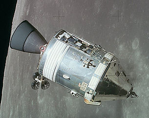 Apollo 15 CSM
(Command and Service Modules)
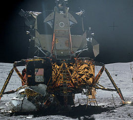 Apollo 16
LM
Each of the spacecraft needed to be able to navigate through
space, with or without the assistance of the astronauts, and
therefore needed to have a "guidance system". The guidance
system was developed by MIT's Instrumentation Lab, now an
independent company known as the Charles Stark Draper Laboratory.
An important part of the guidance system was the Apollo Guidance
Computer—or just "AGC" for short. On any given Apollo
mission, there were two AGCs, one for the Command Module, and one
for the Lunar Module. The two AGCs were identical and
interchangeable, but they ran different software because the
tasks the spacecraft had to perform were different.
Moreover, the software run by the AGC evolved over time, so that
the AGC software used in later missions like Apollo 17 differed
somewhat from that of earlier missions like Apollo 8.
Considered just as a computer, the AGC was severely under-powered
by any more-modern standards. The basic characteristics of
the AGC were:
2048 words of RAM. A "word" was 15 bits of
data—therefore just under 2 bytes (16 bits) of data—and so the
total RAM was just 3840 bytes.
36,864 words of read-only memory, equivalent to 69,120
bytes.
Maximum of about 85,000 CPU instructions executed per
second.
Dimensions: 24"×12.5"×6".
Weight: 70.1 pounds.
Power supply: 2.5A of current at 28V DC
It is
occasionally quipped—with perhaps greater wit than insight—that
the AGC was more like a calculator than a computer. But to
say this is to grossly underestimate the AGC's sophistication.
For example, the AGC was multi-tasking,
so that it could seemingly run multiple programs
simultaneously.
Another important part of the guidance system was the
Display/Keyboard unit—or just "DSKY" for short. The AGC by
itself was simply a box with electrical connections, without any
built-in way for the astronaut to access it. The DSKY
provided the astronaut with an interface by which to access the
AGC.
The Lunar Module had a single DSKY, positioned between the two
astronauts where it could be operated by either of them.
The Command Module actually had two DSKYs. One of the CM's
DSKYs was only the main control panel, while the other was
positioned near the optical equipment used to mark the positions
of stars or other landmarks.
The DSKY as a substantial piece of equipment in its own
right:
Dimensions: 8"×8"×7"
Weight: 17.5 pounds.
Perhaps the most important part of the guidance system was
the Inertial Measurement Unit—or just "IMU" for short. The
IMU continuously kept track of the acceleration and rotation of
the spacecraft, and reported this information back to the
AGC. By mathematically processing this data, the AGC could
know on a moment-by-moment basis the orientation and position of
the spacecraft.
Fabrizio's Alternate Introduction to
the AGC
(Fabrizio Bernardini has
contributed this alternate introduction to the AGC, from a poster
presentation he made, and then was kind enough to give use both
the poster, in Italian, and an English translation. The
words and photos are his, and I'll simply present them
as-is. Don't be surprised if there's some duplication of
material. Thanks, Fabrizio!)
Introduction
The first contract
assigned within the scope of the Apollo program, a little after
the decision by president Kennedy to reach the Moon before the
decade was out, has been that for the computerized guidance and
navigation system. Requirements for the system were clear and
simple, but apparently unreachable at the time: build a small
autonomous system, able to steer a crew from the Earth to the
Moon and bring it back safely to the
Earth.
A giant leap for
technology
When in 1962 MIT's
Instrumentation Laboratory began, under the direction of the
legendary Dr. Charles Stark Draper (a pioneer of inertial
navigation systems), the development of a computer to bring
people from the Earth to the Moon, computers where in their
childhood. They were giant electronic-tubes devices, big as rooms
or even building floors, controlled by means of of perforated
tapes or cards, with insignificant memory capacity compared to
the personal computers that would be born at the end of the
1970's.
With an engineering
courage that has few precedents, designers (historical characters
like Hal Laning Jr, Eldon Hall, Ramon Alonso, Albert Hopkins and
many others) elected to use for the first time in history a newly
born electronic component: the integrated circuit. Still far away
from the microprocessor or microcontrollers of the 1980's, the
only functions available were simple logic ones. Using thousands
of these logic gates, it was possible to implement what would be
called today the central processing unit of the computer and all
support circuitry. For memory, since it was still impractical to
build it with integrated circuits, the ferrite core technology
(where small rings were used to store single bits) was adopted.
being reasonable easy to miniaturize. Using the same technology,
the program memory was made of tens of thousands of ferrite
cores, hand woven with thin copper wire to represent the 1's and
0's of the computer software. These wire were to be woven by
specialized workers at least one month before the launch of a
mission.
These critical
decisions, taken in the era of the "dinosaur computers", were
found to be winners in the following years, just seven, that saw
men land on the Moon. The onboard computer developed for the
Apollo program (and installed into both the Command Module and
the Lunar Module, but with different software for each vehicle)
was an outstanding technological success and established rules
for the development of future computers both for aerospace and
other applications. It also opened the way to new applications of
integrated circuits (it has been the first big user on an
industrial scale) and being at the time the smallest computer in
the world, helped push computers into other sectors of
technology.
AGC, CMC,
LGC?
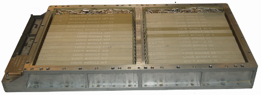The computer and the
navigation system developed for the Apollo program were used both
on board the Command (and Servce) Module, or CSM, and on board
the Lunar Module, or LM. To distinguish them, the one in the
Command Module was said CMC (Command Module Computer), that in
the Lunar Module was said LGC (Lunar-module Guidance
Computer).
The software was
different for the two computers, and each "edition" had an
independent development path, with shared components. It was in
common the management of the various programs, as well as the
management of the inertial platform and that of the interface
toward the crew (called DSKY, for Display and
Keyboard).
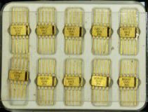The CMC software
was different for the presence of the Saturn V rocket monitoring
and control program (never used in its controlling functions as
the Saturn computer always performed flawlessly). It also
contained functions to steer during the trans-lunar trajectory
maneuver, during orbital flight and of course for the re-entry
into the Earth's atmosphere.
The LGC software
was different for the descent and landing programs, and for the
ascent program and the subsequent lunar orbit
insertion.
Another part in
common was devoted to the rendezvous maneuvers, as both vehicles
could perform as the active part in the complex process of
rejoining each other in orbit.
Obviously, the
software of both vehicles was different in the management of
propulsion devices, and the navigation sensor which, while in the
CSM were a sextant and a telescope, in the LM they were a single
optical device with a special behavior (due to the reduced size
of the LM and the need to keep weight within precise
limits).
Display and
keyboard
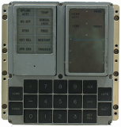The most visible
component of the whole AGC was the panel used by the crew to
interact with the computer. In an era in which "speak" to a
computer using a video terminal was still a futuristic
advancement, the unit called Display and Keyboard, or DSKY,
represented a drastic achievement in the relationship between man
and machine. For the first time the famous seven-digits numerical
displays were introduced and for the first time it was possible
to tell the computer, while it was working, what to do, being
also possible to interact with it to change parameters, or to
monitor numerical values of different kind (which by itself was a
real novelty in an aerospace world still dominated by
gauges).
System limitations
imposed, of course, a number of restrictions and ingenuous
solutions even if using the language developed for the purpose of
user interaction with the computer required patience and training
to ensure efficiency and
confidence.
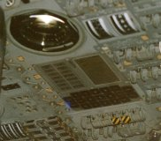The DSKY's language was
based in two-digits numeric codes, used to represent Verbs (that
is actions) and Nouns (that is the object of an action). In the
figure it is shown part of a checklist (from the Apollo A17
Flight Crew G&N Dictionary) that summarized all the Verb/Noun
codes for the Lunar Module computer. Verb and Noun values had a
prominent display on the DSKY as well as the active program (or
major mode, related usually to a flight phase), which was also
assigned a two-digits numerical value and displayed on the top
right corner of the unit.
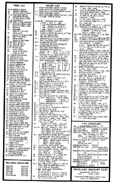The Verb and Noun
keys were used to set the Verb/Noun combination of interest, and
telling the computer to accept it by pressing the Enter key
(e.g,, a typical sequence could have been: Verb 16 Noun 65
Enter). The Clear key was used to correct user typing errors,
while the Reset key was used to cancel error warnings from the
computer. The Pro key (where Pro stands for Proceed) was sued to
confirm critical operations (like the execution of a maneuver or
the starting and stopping of the computer). The Key Release key
was used to release the control of the DSKY to other routines
that required its use, that is when the corresponding indicator
light was flashing to grab the attention of the operator. The
latter behavior was another novelty as many programs could run
inside the AGC at the same
time.
Why
"guidance"?
The real task
assigned to MIT's Instrumentation Laboratory (now Draper
Laboratories) was the design and implementation of a guidance
system for Apollo, that is a system able to keep a notion of the
state of the vehicle in every instant and provide guidance
directions for the execution of specific flight phases (for
instance, landing on the Moon). The whole AGC is therefore a
wider system, not limited only to the computer, that provided
sensors, actuators, interfaces for the crew and the
communications system (to exchange data with the control
center).
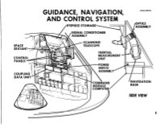For the navigation
sensors, designers chose an inertial navigation system based on a
"three-axis inertial platform" able to maintain an given
orientation (used as reference) independently by the motions of
the vehicle. On the "platform", three accelerometers were mounted
to measure accelerations and thus update the vehicle state during
propulsive phases. In the free-fall phases, when the vehicle
moved along orbits dictated by Earth/Moon gravities, the state
was updated mathematically by applying Newton's and Kepler's
equation. Verification of the state, to correct it in case of
possible deviations from the intended path, were done by means of
a sextant mounted with the "platform". By observing stars and the
angle between stars and the horizon (or a landmark) crew were
able to navigate in the Earth/Moon system like sailors did for
centuries before the advent of of modern radio navigation
systems. The mathematics behind the whole guidance and navigation
system was worked out by prof. Richard Battin, at the time one of
the most prominent experts in the sector, who also went to
initially lead the software development task for
AGC.
In the course of
the project, the AGC was added other main functions, like that to
act as go-between for the manual control of the vehicle. By all
means that was the first "fly-by-wire" guidance system in
history, and the first "digital autopilot". This and other
additional utilities for secondary tasks demonstrated the
versatility of computerized system with respect to more classical
approaches.
AGC
Software
As in all
computerized systems, the physical part of the computer
(circuits, logic gates and memory) is useless without a program
to manage its operation. Software became soon one of the
principal aspects of each Apollo mission and hundreds of
programmers (at a time when the word "software" was still unknown
but to a few insiders) worked to produce programs of very high
quality, and with lots of ingenuity, having to overcome not only
the intricacies of the space guidance and navigation equations,
but also the limitations imposed by the inflexible hardware
architecture. Even in this case, methods and technologies were
developed for this specific purposes to soon become part of the
required knowledge in the aerospace
world.
Software
development was not even worthy a mention in the original
contract, as it was considered expected, at the time (but often
it is still the same today), that programming the computer was a
side task in the whole project. In truth, at the peak of the
Apollo program, in 1969, software workers were approximately as
much as the hardware workers. But being the "software culture"
not widely diffused, everybody looked with suspicion at this
intangible but fundamental,
"thing".
Two were the
programming languages available: one was the proper central
processing unit language, or assembly language, and the other was
a higher-level language, that was to be interpreted at execution
time within the computer by a program called, exactly,
Interpreter. This second language enabled to save memory speeding
up the programming of complex mathematical operations, at the
expense of a slower execution
speed.
During the course
of software development, in addition to performance limitations,
programmers had to fight against memory limitations. Uncountable
tricks were used by programmers to save memory words, often to
the detriment of code readability. In addition, to worsen the
situation, it was required to adopt particular techniques to
protect critical functions from a sudden computer restart. By
keeping tab on the state of programs under execution it was
possible to ensure that in case of serious problems, the computer
were able to restart and resume programs from the place they were
at the moment of the trouble, without causing issued with
critical functions, like the propulsive
phases.
The experience
acquired with the Apollo program, that continued after the lunar
missions with the Skylab flights and the Apollo-Soyuz mission,
was not lost. The performance of the software and the reliability
of the hardware made the AGC the logical choice for the first
computer controlled flight, or "fly-by-wire", of an airplane (a
modified F-8 fighter). The experience of programmers was
subsequently transferred to the Space Shuttle program, where an
evolution of the AGC software, and the methods used to implement
it, contributed to the making of a space vehicle entirely
controlled by the on-board
computer.
Myths and
legends
Is it
true that the Apollo computer had less power than a digital
pocket calculator? No it is not true.
The performances of the Apollo Guidance Computer were comparable
to that of the central processing unit of computers like the
Apple II, the Commodore 64 and the ZX Spectrum, the personal
computer that opened the way for the digital revolution at the
end ot the 1970's. The big difference was that the AGC was highly
reliable and had many more input/output ports to be able to
control, and receive data from, sensors and devices within the
Command Module and the Lunar Module. In addition, it was able to
execute programs in real-time, that is which operated
continuously performing more tasks at the same time and
guaranteeing that high priority tasks were performed first when
required. Its architecture is not much different from that of
modern microcontrollers used today for the most disparate tasks,
with the difference that the latter are at least 10 to 20 times
faster than the AGC and enormously smallest (being integrated in
a single chip). For this reason programming and using the AGC is
not very far from the world in which control systems and embedded
systems designers and hobbyists work
today.
Is it
true that during the landing of Apollo 11, Neil Armstrong had to
take control from the computer because of the alarms it
generated? Stupid media
remarks often cite "software errors" that generated alarms during
Apollo 11 descent to the Moon (the most critical phase of the
mission). In truth, the robustness of AGC software, in terms of
good design and reliability, saved the mission when other issues,
external to the computer, were causing an overload in it its
operation (and was thus correctly alerting the crew of the
condition). The LGC kept working correctly, but toward the end of
the descent, Armstrong took manual control (as everybody else who
followed him on this task) because the landing point targeted by
the computer was too dangerous for a safe
landing.
Was AGC
the first space computer? No, AGC wasn't the
first space computer or the first computer who flew on a crewed
vehicle. Gemini spacecrafts had also an onboard computer, made
with transistors, and able to assist the crew (but not totally
control the vehicle) in the propulsive phases, during
'rendezvous' and during re-entry. But that computer was not an
essential part of the mission, while AGC was born to provide
assistance in completing the mission without ground support.In
addition to that, other digital computers were developed for the
Titan rockets, and of course for the Saturn, but they were
limited to a single task and were much bulkier and heavier. The
Lunar Module also had a second onboard computer, the AGC, Abort
Guidance System, much simpler and able to ensure the climb back
to orbit and a rendezvous with the CSM in case of troubles with
the primary guidance and navigation
system.
Did the
AGC have an operating system?In a
certain sense it had, in the sense today commonly considered for
computers for control applications. The AGC operating system was
made of an executive and a manager of queue for waiting programs.
The executive provided, in turn and basing on priority, a chance
to each program to execute its own instructions and also managed
possible interruptions generated by random external events. This
way more than a single program could be active at the same time,
even if the allocation of "machine time" was not based by a rigid
scheduling (preferred technique at the time). but was was
asynchronous and linked to the correct design of each function.
Also, it was available a separate process to verify the
well-being of the computer, one for the management of the DSKY
and one for managing external devices. And another part of this
"operating" was devoted to the higher level language used for
mathematical operations that did not require a real-time
response.
Introduction to Virtual AGC
The Virtual AGC project
provides a virtual
machine which simulates the AGC, the DSKY, and some other
portions of the guidance system. In other words, if the
virtual machine—which we call yaAGC—is given the same software
which was originally run by the real AGCs, and is fed the same
input signals encountered by the real AGCs during Apollo
missions, then it will responds in the same way as the real AGCs
did. The Virtual AGC software is free of charge, can be obtained for Windows, Mac OS X, Linux, or
as open source software source code so that it can be studied
or modified.
The video clip above (courtesy of Dean Koska and YouTube)
illustrates Virtual AGC running on a Palm Centro—which isn't
supported directly from our download
page. But it's one of the great advantages of open-source
software that you can take it an adapt it to your wishes
without being at the mercy of the creators of the software.
After you install the Virtual AGC software you can run the
simulation by clicking its desktop icon :
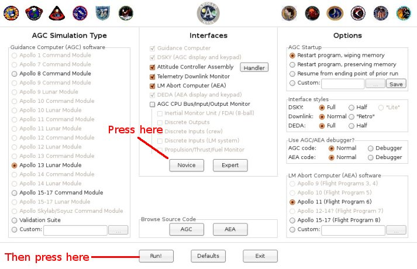
While there are all manner of runtime options you can select in
this screen, such as which Apollo mission you which to fly, it's
simplest as a newcomer to just click the Novice button and then
to click Run. In the screenshot below, the DSKY is
displaying the time since startup (00000 hours, 00003 minutes,
00270 hundreds of a second), though that's not something it will
do automatically when you start it up.
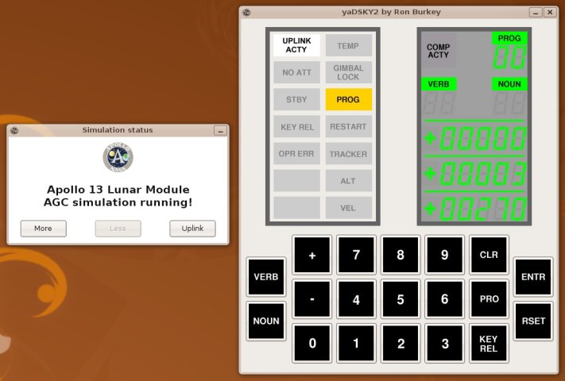
In this simplest of configurations, you are simulating the
AGC of the Lunar Module of Apollo 13, and you are provided
with a simulated AGC and simulated DSKY. You can enter
commands at the DSKY keypad, and the AGC will report the
results of its actions on the DSKY's display.
How to Operate the AGC from the DSKY
The first thing
you need to know when operating the AGC is that it contains a
collection of programs, each identified by a two-digit
number. The most-basic program is program 00, usually known
as "pooh" (as in "Winnie the Pooh") or P00. In fact, in the
screenshot above, the AGC is running P00, as you can see by
looking at the "PROG" area in the upper right-hand corner of the
DSKY. The available programs differ somewhat from mission
to mission, and the picture below (taken from reference cards
supplied to the astronauts) is a sampling of some of the programs
available for the Apollo 15 Command Module.
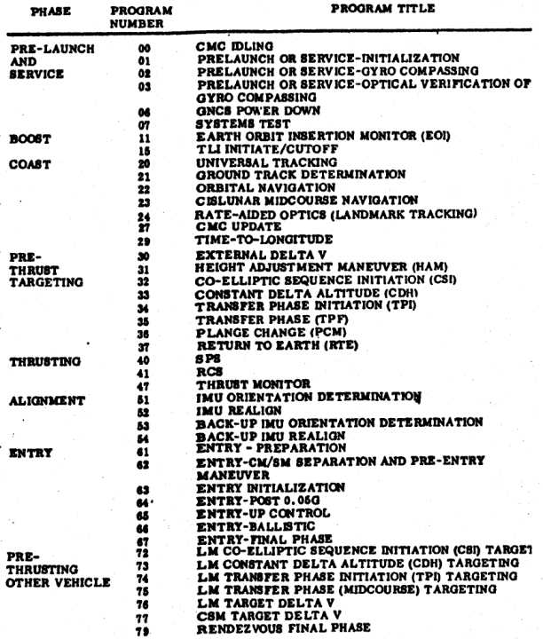
From the astronaut's perspective, all operations of the computer
are controlled by a quirky system of "verbs" and "nouns".
Verbs and nouns aren't words, as you might
suppose, but are instead two-digit numbers. What makes them
"verbs" and "nouns" is that they are somewhat analogous to verbs
and nouns in natural languages like English, in which the verb
describes the action to be taken and the noun describes the data
to which the action is applied. So most commands are
applied by hitting a key sequence like the following on the
DSKY:
VERB digitdigit NOUN
digitdigit ENTR or sometimes
VERB digitdigit ENTR
For example, a command like V06N36E (VERB 0 6 NOUN 3 6 ENTR)
would mean to perform action 06 on data 36. The exact
meanings of the verbs-numbers and noun-numbers differ from
mission to mission—i.e., from AGC software version to
version. The pictures below show a sampling of the
available verbs and nouns from the astronaut's reference cards
for the Apollo 15 Command Module, from which you can see that
verb 06 means to perform a decimal display and noun 36 means
"time of AGC clock", so V06N36E should display the current time
from the AGC's clock, if that happens to be a legal action for
the current program.
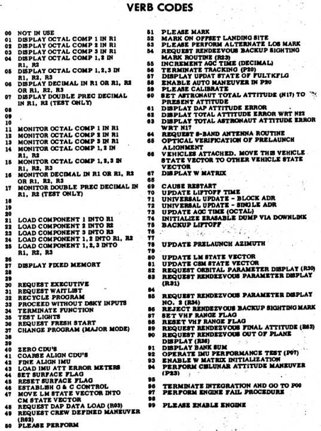
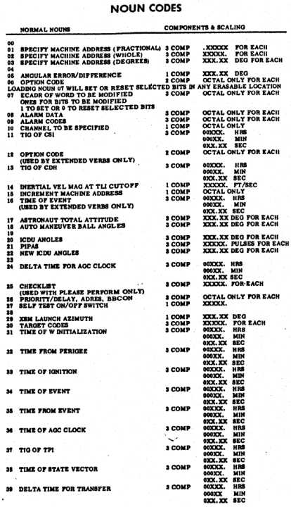
There are also some exceptions, such as getting the AGC
to run the P00 program. You do that with a key sequence
like V37E00E, in which NOUN is replaced by ENTR for some
reason.
How did this strange verb/noun system get put into place?
One of the original AGC developers, Ram\F3n Alonso, provides an
explanation. Apparently, nobody had yet arrived at any kind
of software requirements for the AGC's user interface when the
desire arose within the Instrumentation Laboratory to set up a
demo guidance-computer unit with which to impress visitors to the
lab. Of course, this demo would have to do something, if it was going to be
at all impressive, and to do something it would need some
software. In short order, some of the coders threw together a
demo program, inventing and using the verb/noun user-interface
concept, but without any idea that the verb/noun concept would
somehow survive into the flight software. As time passed,
and more and more people became familiar with the demo, nobody
got around to inventing an improvement for the user interface, so
the coders simply built it into the flight software without any
specific requirements to do so. Many objections to the
verb/noun system were received by the developers, such as "it's
not scientific", "it's not dignified", or even "astronauts won't
understand it". Even though the coders of the demo hadn't
seriously intended the verb/noun interface to be used in any
permanent way, it became a kind of devilish game to counter these
objections with arguments as to why the interface was really a
good one. In the end, the coders won and the verbs and
nouns stayed. Nevertheless, the following Shakespearean
quote (from Henry IV) is
embedded within the AGC source code: "It will be proved to
thy face that thou hast men about thee that usually talk of a
noun and a verb, and such abominable words as no Christian ear
can endure to hear."
You may notice that on the Virtual AGC main
display screen there are a number of different Apollo missions
listed, but that not all of them are selectable. That's
because Virtual AGC strictly simulates the original AGC computer
hardware, and that requires having the original software that ran
on the AGC. But we don't have copies of all of the
different software versions used for the different
missions! Collecting this software is one of the principal
goals of the Virtual AGC project, so if you happen to know a
collector, a museum, or any of the original AGC developers who
have printouts of AGC software, let us know! (We don't want
the printouts themselves, just copies of the information in them,
and we're willing to travel there to do the copying work
ourselves.)
"What would you call a collection of programs,
routines, subroutines, procedures, major modes, jobs
and tasks, that all have to exert the utmost courtesy
in sharing the resources of a single spacecraft
computer? The physical form of fixed memory gave us our
answer: a rope. With no tapes, disks, or any form of
backing store, every scrap of coded logic had to be
built into one rope memory, 24K words in a Block I AGC,
for each Apollo mission. Ropes had names of up to 8
characters, and early ones were named in honor of
Apollo\92s role in ancient mythology, as driver of the
phaeton carrying the Sun across the sky: ECLIPSE (begun
on the day of a solar eclipse that occurred 6 years to
the day before the first Moon landing), SUNRISE,
CORONA, SOLARIUM, and SUNSPOT. In Block II development,
there was a maverick called RETREAD, then AURORA,
SUNDIAL, SUNDISK, SUNBURST, and SUNDANCE.
Finally, Fred Martin, our transplanted New Yorker who
steadfastly refused to pledge allegiance to the Red
Sox, persuaded us that it was more important to give
them names that linked them to their vehicles: COLOSSUS
for the Command Module; LUMINARY for the
LM."
— Hugh Blair-Smith
(A description of the software-naming convention that
didn't quite make it into the final version of AGC
developer Hugh Blair-Smith's book, Left Brains for
the Right Stuff.)
These programs, though having different names, are not really
independent programs. There is a complex family heritage,
and a lot of overlap between them. So if you understand one
of the programs, you will understand 99% of what's in any of the
others.
The AGC software is mostly written in assembly
language. "Assembly language" is a very simple language
in which each instruction—usually, each line of software source
code—represents a single primitive CPU operation. Since
each type of CPU provides different primitive operations, the
assembly language for each type of CPU differs from that of every
other type of CPU. The AGC assembly language, being based
on the custom AGC CPU, thus differs in detail from every other
type of assembly language but shares certain customary
elements. The specific assembly language of the AGC was
referred to as "basic"—not to be confused with the famous
later computer language BASIC which is many people's first
introduction to simple computer programming. Here's a short
excerpt from the Apollo 11 Lunar Module software to give the
flavor of it:
TWIDDLE INHINT TS L # SAVE DELAY TIME IN L CA POSMAX ADS Q # CREATING OVERFLOW AND Q-1 IN Q CA BBANK EXTEND ROR SUPERBNK XCH L
WAITLISTINHINT XCH Q # SAVE DELTA TS WAITEXIT # WAITEXIT. EXTEND INDEX WAITEXIT # IF TWIDDLING, THE TS SKIPS TO HERE DCA 0 # PICK UP 2CADR OF TASK. -1 TS WAITADR # BBCON WILL REMAIN IN L DLY2 CAF WAITBB # ENTRY FROM FIXDELAY AND VARDELAY. XCH BBANK TCF WAIT2
The things at the left-hand side (TWIDDLE, WAITLIST, DLY2) are "program labels", and
are used to provide names for different blocks of source
code. The next column to the right contains the actual CPU
instructions (INHINT, TS, CA, ADS, etc.) while the column to
the right of that (L, POSMAX, Q, etc.) specifies the data on
which the CPU instructions are supposed to operate. For
example, at the very bottom you'll find "TCF WAIT2"; when the program
reaches that point, the instruction TCF causes it to jump to program
label WAIT2.
Finally, anything preceded by the '#' symbol is just a comment
added for explanatory purposes by the programmer, but not
affecting program execution in any way.
You can learn all about AGC basic assembly language, if you so
desire, in the Virtual
AGC assembly-language manual. The Virtual AGC software
provides an assembler, which is a program that converts
assembly-language source code to executable code which can
actually be run on the AGC CPU. So with Virtual AGC, you
can actually create and run your own AGC programs.
As it happens, the functionality which the AGC needed to provide
was so complex that it wouldn't have fit within the amount of
physical memory provided by the AGC if it were written entirely
in basic assembly language. One thing that was done to get
around this was to provide also a higher-level computer language
referred to as "interpretive", in which each interpretive
instruction represents a large number of basic assembly-language
instructions. Interpretive thus has the advantage of
cutting down on memory usage, but typically has the disadvantage
of running much more slowly, and therefore had to be used with
care. Within any given AGC program like Luminary, basic and
interpretive code is intermixed.
Here's a sample of interpretive code:
STATINT1TC INTPRET BON RTB QUITFLAG # KILL INTEGRATION UNTIL NEXT P00. NOINT LOADTIME STORE TDEC1 CALL INTSTALL SET CALL NODOFLAG SETIFLGS GOTO STATEUP 600SECS 2DEC 60000 B-28 ENDINT CLEAR EXIT STATEFLG TC PHASCHNG
Some of the things here are the same as in the basic assembly
language, such as the program labels and the program
comments. As with basic assembly language, the next column
to the right of the program labels (BON,STORE, CALL, etc.) contains
instructions—though mostly interpretive instructions rather than
basic instructions.
In this sample, "TC
INTPRET" and "TC
PHASCHNG" are basic assembly-language code. In fact,
"TC INTPRET"
actually means to begin interpreting the lines that follow as
interpretive code, and every block of intepretive code must
somehow be preceded by a basic instruction like that. Near
the end, you see the interpretive instruction EXIT, and this means to stop
working with interpretive code and to resume working with basic
assembly language.
In other respects, though, interpretive is very weird in
comparison to basic assembly language. For example, the
column to the right of the instruction column contains mostly
names of variables operated on by the instructions ... but can
also contain more instructions, because intepretive instructions
can be packed two to a word of memory. Also, many variables
don't seem to be preceded by instructions, because a single
interpretive instruction may operate on the lines below it as
well as on the column to the right of it. For example, in
the two lines of code "CLEAR EXIT / STATEFLG" near the end of the
sample, the CLEAR
and EXIT
instructions are grouped together because they are packed into a
single word of memory, but the CLEAR instruction actually
operates on the variable STATEFLG. Oh, those wacky
AGC developers! How they must have chuckled when they
dreamed up that scheme.
The AGC was not the only
computer in the Lunar Module. As a backup to the main
guidance system, there was a completely separate guidance system
called the Abort Guidance System (AGS) developed by TRW
Aerospace, now a division of Northrop Grumman. As the name
implies, the AGS was intended to be used only in the case of an
aborted landing, and its basic function was simply to get the LM
into an orbit from which it would be possible for the CM to
rendezvous. Fortunately, this functionality never had to be
used in a real mission, but that does not alter the significance
of the system.
Naturally, an important part of the AGS was a computer, and this
computer was called the Abort Electronics Assembly—or just "AEA"
for short. Since the AGC and AEA were developed
independently by unrelated groups, there is no commonality
between them in terms either of hardware or of software.
There was essentially no interaction between the AGC and AEA,
except that the spacecraft's "state vector"—its current position,
velocity, and orientation—could be transferred.
Here are the basic characteristics of the AEA:
2048 words of RAM. A "word" was 18 bits of
data—therefore just over 2 bytes (16 bits) of data—and so the
total RAM was just 4608 bytes.
2048 words of read-only memory, so equivalent to 4608
bytes. It should be noted that the "RAM" retained its
contents when power was removed, so that the full 4096 words
(9216 bytes) of memory were available for program
storage.
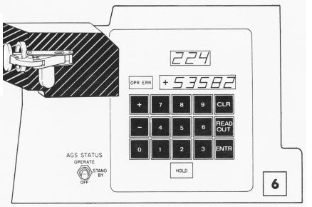Maximum of about 100,000 CPU instructions executed
per second.
Dimensions: 23.75"×8"×5".
Weight: 32.7 pounds.
Power supply: 90 Watts.
Just as the AGC had its DSKY for interfacing to the
astronaut, the AEA had its own Data Entry and Display Assembly—or
"DEDA" for short.
The astronaut interface was very simple. You could do one
of two things:
Change the value stored in a memory location; or
Cause the value of a memory location to be displayed (and
to update twice per second).
In other words, to usefully interact with the AEA, you had
to know the numerical values of the memory addresses that had any
significant purposes. But don't be fooled by the simplicity
of the interface into believing that the AEA was a mere
calculator. Though its functionality was much less than
that of the AGC, it still had to perform very significant
guidance functions on demand, and to have very sophisticated
software.
Virtual AGC provides the ability to simulate the AEA and DEDA,
and you can activate this ability by selecting the "LM Abort
Computer (AEA)" option in the Virtual AGC main window. In
the screenshot below, the DEDA is displaying the contents of
location 377, which is the number of interations of the units
self-test which have been executed (and passed).
The AEA was programmed in its own assembly language, which was
completely different from that of the AGC. The Virtual AGC
software includes an AEA assembler, so you can create and run
your own AEA software, if you'd like to do so. You can learn more
about the AEA, including the definition of its assembly language,
at the main Virtual AGC web-page for
it.
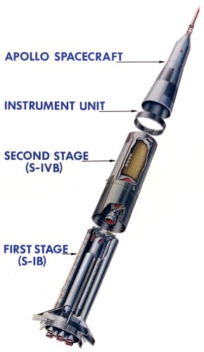
Guiding the Mighty Saturn Rocket
It's natural to think
that the AGC might have steered and otherwise controlled the
Saturn V rocket that hurled the Command Module and Lunar Module
onto its moon-bound trajectory, or the Saturn IB rocket that was
used for Earth-orbital missions like Apollo 7, but in fact it
isn't true. The AGC was able to provide limited
guidance-system backup for some of the Saturn burns, but the main
responsibility for guiding the Saturn rested with yet another
onboard computer, the Launch Vehicle Digital Computer (or LVDC
for short). The astronauts were able to monitor various
sensor readings from the Saturn's guidance system on their
displays, but neither they nor the AGC normally had any control
over the rocket.
Unlike the AGC and AGS, the LVDC was not installed in the Command
Module or Lunar Module, but was instead installed in the Saturn
itself, in a non-propulsive stage called the IU (Instrumentation
Unit). The IU perched above the final propulsive stage, the
S-IVB, and therefore was the last part of the Saturn to be
discarded by the Command Module. The picture at right
illustrates this for a Saturn IB rocket, but the Saturn V is very
similar ... only much bigger!
There's a lot more information about the LVDC on the main Virtual AGC web-page for it, but there's no
denying that at present we know far less about the LVDC than
about any of the other Apollo flight computers.
To Learn More ...
This web page has provided a brief
introduction to the AGC & friends, and to Virtual AGC, but if
you'd like to learn more about the AGC without taking the trouble
to become a full expert on it, you might want to read the AGC's
Wikipedia
article.
If that's not enough for you, you can learn a lot more by looking at the main Virtual AGC web pages, and of course that's
what we think you should
do! In fact, the main Virtual AGC website contains every
AGC-related scrap of data, documentation, and software we've been
able to find, so it can be somewhat intimidating. We're
sorry about that, but training for an Apollo moon landing isn't
easy!

 (Fabrizio Bernardini has
contributed this alternate introduction to the AGC, from a poster
presentation he made, and then was kind enough to give use both
the poster, in Italian, and an English translation. The
words and photos are his, and I'll simply present them
as-is. Don't be surprised if there's some duplication of
material. Thanks, Fabrizio!)
(Fabrizio Bernardini has
contributed this alternate introduction to the AGC, from a poster
presentation he made, and then was kind enough to give use both
the poster, in Italian, and an English translation. The
words and photos are his, and I'll simply present them
as-is. Don't be surprised if there's some duplication of
material. Thanks, Fabrizio!)
{kind=link}
{kind=link}
{kind=link}
{kind=link}
{kind=link}